Podcast clips, cut by hand Altamonte Springs, FL
Vocarra
For those with something to say.
Vocarra Media Scroll
01 / What we do
You already recorded it. Somewhere in that episode is a minute that holds on its own. We go and find it.
02 / How it runs
Three steps, and two of them are ours.
-
01
You publish
We pull the episode ourselves. Nothing to upload, nothing to send, no change to the way you record.
-
02
A person watches it
Not a score picking the loudest thirty seconds. Someone sits through the episode and marks the moments that still make sense with the rest of it cut away.
-
03
Clips arrive ready
Vertical, captioned, your handle on them, on whatever schedule suits you. One round of revisions on every clip.
03 / Rates
See the ratesFour plans, from a one off set of three clips to thirty a month. Monthly plans cancel any time before the next billing date.